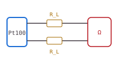
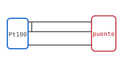
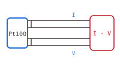

Universidad del Valle · Sede Cartago · Tecnología en Electrónica
Medición de temperatura en procesos industriales
Cuaderno interactivo de prácticas experimentales para Instrumentación Industrial. Recorre la cadena de medición completa, desde el sensor hasta la señal de 4–20 mA, con tres familias de sensores: la RTD Pt100, la termocupla y el termistor.
RTD Pt100
Termocupla tipo K
Termistor NTC 10 kΩ
Ruta del cuaderno
Guía de laboratorio
Caracterización de sensores de temperatura
Esta práctica tiene dos partes: una exploración guiada con simuladores y un laboratorio virtual en el que cada estudiante recibe un banco de medición con sensores ligeramente distintos a los nominales, tal como ocurre con los sensores reales.
Objetivo general
Caracterizar experimentalmente una RTD Pt100, una termocupla tipo K y un termistor NTC, y relacionar sus curvas de respuesta con los modelos normalizados y con las técnicas de acondicionamiento y transmisión de señal usadas en la industria.
Objetivos específicos
- Identificar la variable de proceso, los elementos primarios y la cadena de medición según la simbología ISA-5.1.
- Obtener la curva R–T de una Pt100, estimar \(R_0\) y \(\alpha\) por mínimos cuadrados y cuantificar el error de la conexión a 2 hilos.
- Medir la f.e.m. de una termocupla tipo K, aplicar la compensación de unión fría y calcular su coeficiente de Seebeck medio.
- Ajustar los modelos \(\beta\) y Steinhart–Hart a un termistor NTC y comparar su exactitud.
- Escalar la medición a un lazo de corriente de 4–20 mA y redactar un informe técnico con los resultados.
Equipos de referencia
El laboratorio virtual reproduce el comportamiento de este montaje. Si la sede cuenta con los equipos, la misma guía sirve para la práctica presencial.
| Equipo | Especificación sugerida | Uso |
|---|---|---|
| Baño termostático | 0–150 °C, estabilidad ±0,1 °C | Prácticas 1 y 3 |
| Horno de pozo seco (calibrador) | 50–650 °C | Práctica 2 |
| Termómetro patrón | Pt100 clase AA o SPRT, incertidumbre ≤ 0,05 °C | Temperatura de referencia |
| Multímetro de banco | 6½ dígitos, medición de resistencia a 4 hilos y de mV | Prácticas 1 y 2 |
| Pt100 clase A | IEC 60751, 4 hilos, vaina de acero inoxidable | Práctica 1 |
| Termocupla tipo K | IEC 60584, con cable de extensión KX | Práctica 2 |
| Termistor NTC | 10 kΩ a 25 °C, \(\beta \approx 3950\) K | Práctica 3 |
| Microcontrolador | Arduino o ESP32 con ADC de 12 bits, resistencia fija de 10 kΩ | Práctica 3 |
Metodología
- Antes de la sesión. Lee las secciones II a VI y resuelve los simuladores. Responde las preguntas orientadoras de cada práctica.
- Durante la sesión. Identifícate en el laboratorio virtual con tu código estudiantil. Ese código define tu banco de medición, así que tus datos serán distintos a los de tus compañeros.
- Registro. Toma las lecturas que pide cada práctica, ejecuta el análisis y escribe tu interpretación en los campos de cada página.
- Después de la sesión. Resuelve los ejercicios, genera el informe en la sección IX, cópialo a tu procesador de texto y complétalo con gráficas y referencias.
En la práctica presencial, el baño y el horno de pozo seco alcanzan temperaturas que causan quemaduras. Usa guantes térmicos, no retires sondas calientes con la mano y deja enfriar los sensores sobre un soporte metálico.
Sección I · Fundamentos
Variable de proceso y cadena de medición
La temperatura es la variable de proceso más medida en la industria. En un lazo de control se compara la variable de proceso (PV) con el punto de consigna (SP), y la diferencia acciona el elemento final de control.
Sensor, transductor y transmisor
Sensor
Elemento en contacto con el proceso cuya propiedad física cambia con la temperatura: resistencia (RTD, termistor) o f.e.m. (termocupla). En la norma ISA-5.1 se identifica como TE.
Transductor
Convierte una forma de energía en otra. El puente de Wheatstone convierte un cambio de resistencia en una tensión medible del orden de milivoltios.
Transmisor
Acondiciona, linealiza y envía la señal normalizada de 4–20 mA a distancias de cientos de metros con buena inmunidad al ruido. Se identifica como TT.
Recorrido de la señal
Mueve la temperatura del proceso y observa cómo cambia la señal en cada etapa de una medición con Pt100, puente, amplificador de instrumentación y transmisor calibrado de 0 a 200 °C. Toca cada bloque para ver su función.
Dibuja el diagrama P&ID de este lazo con la simbología ISA-5.1 e indica el tipo de señal (física, eléctrica en mV, eléctrica en mA, digital) en cada línea.
Sección I · Fundamentos
Características estáticas y dinámicas
Las hojas de datos de un instrumento describen qué tan bien mide en régimen permanente (características estáticas) y qué tan rápido sigue los cambios del proceso (características dinámicas).
Características estáticas
| Término | Definición | Ejemplo |
|---|---|---|
| Rango | Valores entre el límite inferior (LRV) y superior (URV) de medición. | 0 a 200 °C |
| Alcance (span) | Diferencia URV − LRV. | 200 °C |
| Sensibilidad | Cambio de la salida por unidad de cambio de la entrada, \(S = \mathrm{d}y/\mathrm{d}x\). | 0,385 Ω/°C |
| Resolución | Menor cambio de la entrada que produce un cambio detectable en la salida. | 0,1 °C |
| Exactitud | Cercanía entre el valor medido y el valor verdadero. | ±0,5 % del span |
| Precisión (repetibilidad) | Dispersión entre mediciones repetidas en las mismas condiciones. | σ = 0,05 °C |
| No linealidad | Máxima desviación respecto a la recta de ajuste, en % del span. | 0,4 % FS |
| Histéresis | Diferencia en la lectura según se llegue al punto subiendo o bajando. | 0,1 °C |
| Deriva | Cambio lento de la lectura con el tiempo a entrada constante. | 0,05 °C/año |
Respuesta dinámica de primer orden
Un sensor de temperatura dentro de una vaina o termopozo almacena calor. Ante un cambio brusco del proceso de \(T_i\) a \(T_f\), su lectura sigue un modelo de primer orden con constante de tiempo \(\tau\):
Un controlador muestrea cada 2 s una temperatura que puede cambiar 10 °C en 30 s. ¿Qué montaje elegirías y por qué el termopozo, aunque es más lento, sigue siendo obligatorio en líneas presurizadas?
Sección II · Detectores de temperatura resistivos
La RTD Pt100
Una RTD aprovecha el aumento de la resistencia eléctrica de un metal con la temperatura. El platino domina la industria por su estabilidad química, su respuesta casi lineal y su intercambiabilidad: una Pt100 tiene exactamente 100 Ω a 0 °C.
Ecuación de Callendar–Van Dusen
La norma IEC 60751 describe la resistencia de una Pt100 industrial con dos tramos:
Entre 0 y 100 °C se usa a menudo la aproximación lineal con el coeficiente medio \(\alpha\):
Clases de tolerancia (IEC 60751)
| Clase | Tolerancia en °C | a 0 °C | a 100 °C | Rango válido (hilo bobinado) |
|---|---|---|---|---|
| AA | ±(0,10 + 0,0017 |T|) | ±0,10 | ±0,27 | −50 a 250 °C |
| A | ±(0,15 + 0,002 |T|) | ±0,15 | ±0,35 | −100 a 450 °C |
| B | ±(0,30 + 0,005 |T|) | ±0,30 | ±0,80 | −196 a 600 °C |
| C | ±(0,60 + 0,010 |T|) | ±0,60 | ±1,60 | −196 a 600 °C |
Conexión a 2, 3 y 4 hilos
Los cables que unen la sonda con el instrumento también tienen resistencia, y el instrumento no distingue entre la del sensor y la de los cables.

2 hilos
\(R_m = R_T + 2R_L\). El error crece con la longitud del cable: 1 Ω de cable equivale a unos 2,6 °C.

3 hilos
Un hilo queda en cada rama del puente y sus efectos se cancelan si los conductores son iguales. Es el estándar en planta.

4 hilos
Dos hilos llevan la corriente y dos miden la tensión sin corriente apreciable. Elimina el error de los cables; se usa en laboratorio y calibración.
Autocalentamiento
La corriente de excitación disipa potencia en el sensor y lo calienta por encima del proceso. El error depende del coeficiente de disipación \(\delta\), que es mayor en líquidos agitados que en aire quieto.
Sección II · Simulador
Simulador de Pt100 industrial
Configura el cableado, la corriente de excitación y la clase del sensor. El simulador calcula la resistencia que ve el instrumento, la temperatura que indica y si el error total cabe dentro de la tolerancia de la clase.
En 3 hilos se supone un desbalance del 2 % entre conductores.
Error de medición frente a la tolerancia de la clase
La franja sombreada es la tolerancia permitida para la clase elegida. La curva muestra el error de la configuración actual en todo el rango. Cambia la conexión a 2 hilos y alarga el cable para ver cuándo se sale de la franja.
Sección III · Termoeléctricos
La termocupla
Dos conductores de metales distintos unidos en un extremo generan una fuerza electromotriz que depende de la diferencia de temperatura entre la unión de medida (caliente) y la unión de referencia (fría). Es el efecto Seebeck.
Leyes termoeléctricas
Circuito homogéneo
En un conductor homogéneo no se genera f.e.m. por gradientes de temperatura a lo largo de él. Solo importan las uniones.
Metales intermedios
Insertar un tercer metal (los bornes de cobre del voltímetro) no altera la f.e.m. si sus dos uniones están a la misma temperatura.
Temperaturas sucesivas
\(E(T_1,T_3) = E(T_1,T_2) + E(T_2,T_3)\). Esta ley justifica la compensación de unión fría.
Compensación de unión fría
Las tablas NIST ITS-90 dan la f.e.m. con la unión de referencia a 0 °C. El voltímetro mide la f.e.m. respecto a la temperatura de sus bornes, así que el instrumento mide \(T_{\text{amb}}\) con un sensor auxiliar (termistor o diodo) y suma la f.e.m. equivalente:
La relación \(E(T)\) es un polinomio de la norma: \(E = \sum_{i=0}^{n} c_i\,T^i\) (en mV). Para la tipo K por encima de 0 °C se añade un término exponencial \(a_0\,e^{a_1 (T - a_2)^2}\).
Tipos normalizados (IEC 60584)
| Tipo | Materiales (+ / −) | Rango de uso | S aprox. | Color IEC (+) | Aplicación típica |
|---|---|---|---|---|---|
| K | Ni-Cr / Ni-Al | −200 a 1260 °C | 41 µV/°C | Verde | Uso general, hornos, gases de combustión |
| J | Fe / Cu-Ni | 0 a 760 °C | 52 µV/°C | Negro | Plásticos, atmósferas reductoras |
| T | Cu / Cu-Ni | −200 a 370 °C | 43 µV/°C | Café | Criogenia, alimentos |
| E | Ni-Cr / Cu-Ni | −200 a 870 °C | 68 µV/°C | Violeta | Mayor sensibilidad |
| N | Ni-Cr-Si / Ni-Si | −200 a 1260 °C | 39 µV/°C | Rosado | Alternativa estable a la K |
| R / S | Pt-Rh / Pt | 0 a 1480 °C | 10 µV/°C | Naranja | Vidrio, metalurgia, patrones |
| B | Pt-30Rh / Pt-6Rh | 600 a 1700 °C | ≈ 8 µV/°C | Gris | Muy alta temperatura |
Si se reemplaza el cable de extensión KX por cable de cobre desde el cabezal, la unión de referencia queda en el cabezal (a veces a 60–80 °C) y el instrumento compensa con su propia temperatura ambiente. El error es aproximadamente la diferencia entre ambas temperaturas.
Sección III · Simulador
Simulador de termocupla y unión fría
Las curvas usan los polinomios de referencia NIST ITS-90. Activa o desactiva la compensación y cambia el cable de extensión para ver cómo aparece el error de unión fría.
Tabla rápida a la temperatura elegida
| Tipo | E(T) mV | Sensibilidad local µV/°C | Dentro del rango |
|---|
Sección IV · Termistores
El termistor NTC
Un termistor es un resistor de óxidos metálicos sinterizados cuya resistencia cambia fuertemente con la temperatura. En los NTC la resistencia disminuye al calentarse; en los PTC aumenta bruscamente cerca de una temperatura de conmutación, por eso se usan como protección.
Modelo β
Ecuación de Steinhart–Hart
Sensibilidad
Linealización con un divisor de tensión
Con el NTC en la parte inferior de un divisor alimentado con \(V_{cc}\), la salida es \(V_o = V_{cc}\,\dfrac{R_T}{R_T + R_f}\). La curva de \(V_o(T)\) tiene un punto de inflexión, y la zona alrededor de él es casi lineal. La inflexión cae en la temperatura central \(T_c\) del rango si:
Un termistor pequeño en aire tiene \(\delta\) de apenas 1 a 2 mW/°C. Con 3,3 V sobre 10 kΩ disipa 0,27 mW y se calienta unas décimas de grado. Por eso conviene alimentar el divisor solo durante la conversión.
Sección IV · Simulador
Termistor NTC en un divisor con ADC
Así se mide temperatura con un Arduino o un ESP32: un divisor de tensión, un conversor análogo-digital y un modelo para volver de la cuenta del ADC a grados Celsius.
Tensión de salida del divisor
La curva sólida es \(V_o(T)\); la recta discontinua une los extremos del rango que quieres linealizar. Cuanto más se parecen, más simple es la conversión en el firmware.
Sección V · Acondicionamiento y transmisión
Del sensor al lazo de 4–20 mA
Las señales de los sensores son pequeñas: décimas de ohmio por grado o decenas de microvoltios. Antes de llevarlas al sistema de control se convierten en tensión, se amplifican, se linealizan y se transmiten como corriente.
Puente de Wheatstone con Pt100
Escalamiento del transmisor
Sección V · Criterios de selección
¿Qué sensor elegir?
No hay un sensor mejor en todo. La selección equilibra rango, exactitud, robustez, velocidad, costo y el tipo de acondicionamiento que exige cada uno.
| Criterio | Pt100 | Termocupla K | NTC |
|---|---|---|---|
| Rango típico | −200 a 600 °C | −200 a 1260 °C | −50 a 150 °C |
| Exactitud típica | ±0,15 a ±0,8 °C | ±1,5 a ±2,5 °C | ±0,1 a ±0,5 °C (en su rango) |
| Linealidad | Muy buena | Buena | Muy no lineal |
| Sensibilidad | 0,385 Ω/°C (0,385 %/°C) | 41 µV/°C | −4,4 %/°C a 25 °C |
| Estabilidad a largo plazo | Excelente | Moderada (deriva por oxidación) | Buena si está encapsulado |
| Respuesta | Media | Rápida (unión expuesta) | Rápida (perla pequeña) |
| Excitación | Requiere corriente | Autogenerada | Requiere corriente |
| Acondicionamiento crítico | Resistencia de cables | Unión fría, ruido en µV | Linealización |
| Costo relativo | Medio a alto | Bajo | Muy bajo |
Linealidad comparada entre 0 y 150 °C
Cada señal se normaliza de 0 % (a 0 °C) a 100 % (a 150 °C). Un sensor perfectamente lineal seguiría la diagonal. La separación respecto a ella es la no linealidad que el transmisor o el firmware debe corregir.
Casos de selección
Elige el sensor que recomendarías y compara tu criterio con la justificación.
Sección VI · Laboratorio virtual
Ingreso al laboratorio
Tu código estudiantil asigna un banco de medición. Cada banco tiene sensores con pequeñas desviaciones respecto a los valores nominales, cables de longitud distinta y una temperatura ambiente propia. Por eso tus resultados serán únicos.
Tu banco
Si cambias el código después de tomar datos, el banco cambia y debes repetir las lecturas. Los datos se guardan en este navegador; si cambias de equipo, empieza de nuevo.
Cómo funciona el laboratorio
- Fija la temperatura del baño o del horno con el control deslizante. El indicador simula la estabilización: los valores fluctúan como en un instrumento real.
- Pulsa Registrar lectura para guardar en la tabla los valores que muestra el indicador en ese instante.
- Toma las lecturas mínimas que pide cada práctica, repartidas en todo el rango.
- Pulsa Analizar datos. Se ajustan los modelos por mínimos cuadrados y se dibujan los resultados.
- Escribe tu análisis en el campo de cada práctica. Todo se recopila en el generador de informe.
Práctica 1 · RTD
Caracterización de una Pt100
La Pt100 de tu banco está sumergida en un baño termostático junto al termómetro patrón. El multímetro mide la resistencia a 4 hilos y, en paralelo, como lo haría un instrumento conectado a 2 hilos con el cable de tu banco.
Procedimiento
- Registra al menos 6 lecturas entre 0 y 150 °C, por ejemplo cada 25 °C.
- Analiza los datos: se ajusta la recta \(R = R_0(1+\alpha T)\) a las lecturas de 4 hilos.
- Compara \(\alpha\) con 0,00385 °C⁻¹ y el error de 2 hilos con la tolerancia de la clase A.
| # | T patrón (°C) | R 4 hilos (Ω) | R 2 hilos (Ω) |
|---|
Preguntas orientadoras
- ¿Qué tan lineal es la Pt100 entre 0 y 150 °C? Usa el coeficiente R² y los residuos.
- ¿Por qué el valor de \(R_0\) obtenido no es exactamente 100 Ω? ¿Cumple la clase A a 0 °C?
- Calcula la resistencia total de tu cable con los datos de 2 hilos. ¿Qué longitud de cable AWG 22 corresponde?
- ¿Recomendarías la conexión a 2 hilos para este banco? Justifica con la tolerancia de la clase.
Práctica 2 · Termocupla
Termocupla tipo K y compensación de unión fría
La termocupla está en un horno de pozo seco con el termómetro patrón. El voltímetro mide la f.e.m. entre sus bornes, que están a la temperatura ambiente del laboratorio. No tiene compensación interna.
Procedimiento
- Registra al menos 6 lecturas entre 50 y 600 °C. Anota también la temperatura ambiente.
- Analiza: el programa calcula la temperatura con y sin compensación de unión fría usando la tabla NIST.
- Estima el coeficiente de Seebeck medio como pendiente de \(E_{\text{med}}\) frente a \(T_h - T_{\text{amb}}\).
| # | T patrón (°C) | E medida (mV) | T amb (°C) |
|---|
Preguntas orientadoras
- ¿Cuánto vale en promedio el error sin compensación? Relaciónalo con la temperatura ambiente.
- ¿El coeficiente de Seebeck es constante en todo el rango? Compáralo con la sensibilidad local de la tabla NIST a 100 °C y a 500 °C.
- Con compensación, ¿cuál es el error residual? ¿Cumple la tolerancia clase 2 de IEC 60584 (±2,5 °C o ±0,0075·|T|)?
- Explica con la ley de temperaturas sucesivas por qué funciona la compensación.
Práctica 3 · Termistor
Calibración de un termistor NTC
El NTC forma un divisor con una resistencia de 10 kΩ alimentado con 3,3 V. Un ESP32 con ADC de 12 bits entrega la cuenta digital; con ella calculas la resistencia del termistor y ajustas dos modelos.
Procedimiento
- Registra al menos 7 lecturas entre 0 y 100 °C.
- Analiza: se ajusta el modelo β (recta de \(\ln R\) contra \(1/T\)) y el de Steinhart–Hart (mínimos cuadrados con tres parámetros).
- Compara el error cuadrático medio de cada modelo.
| # | T patrón (°C) | N ADC | Vo (V) | RT (Ω) |
|---|
Preguntas orientadoras
- ¿Qué valor de β obtuviste y cuánto se aleja del nominal de 3950 K?
- ¿Cuál modelo describe mejor tu termistor? ¿En qué zona del rango falla más el modelo β?
- Calcula la resolución en °C de un bit del ADC a 0 °C y a 100 °C. ¿Por qué cambia?
- Escribe la función en C o Python que convertiría la cuenta del ADC a °C con tus coeficientes.
Sección VII · Ejercicios
Ejercicios con verificación
Escribe tu respuesta con la coma o el punto como separador decimal y pulsa «Verificar». Se acepta una pequeña tolerancia por redondeo. El puntaje se incluye en el informe.
Con el modelo lineal \(\alpha = 0{,}00385\ ^\circ\mathrm{C}^{-1}\), calcula la resistencia de una Pt100 a 75 °C.
Ver solución
Un transmisor lee 119,40 Ω en una Pt100 conectada a 4 hilos. Usando Callendar–Van Dusen, ¿cuál es la temperatura?
Ver solución
Una Pt100 a 2 hilos mide un proceso a 100 °C con 15 m de cable AWG 22 (0,0530 Ω/m por conductor). ¿Cuántos grados de error introduce el cable?
Ver solución
Una Pt100 a 25 °C se excita con 5 mA y su coeficiente de disipación es 2 mW/°C. Calcula el error por autocalentamiento.
Ver solución
¿Cuál es la tolerancia máxima permitida para una Pt100 clase B a 200 °C?
Ver solución
Un voltímetro conectado a una termocupla tipo K lee 10,000 mV. Sus bornes están a 25 °C. ¿Cuál es la temperatura de la unión caliente?
Ver solución
En el caso anterior, ¿cuántos grados de error tendría un instrumento sin compensación de unión fría (que supone la referencia a 0 °C)?
Ver solución
Un NTC tiene \(R_{25} = 10\ \mathrm{k\Omega}\) y \(\beta = 3950\) K. ¿Cuál es su resistencia a 60 °C según el modelo β?
Ver solución
El NTC anterior está en la parte inferior de un divisor con \(R_f = 10\ \mathrm{k\Omega}\) y \(V_{cc} = 5\) V. ¿Cuál es la tensión de salida a 60 °C?
Ver solución
Si esa tensión entra a un ADC de 10 bits con referencia de 5 V, ¿qué cuenta digital entrega?
Ver solución
Un transmisor está calibrado de 0 a 150 °C. ¿Qué corriente entrega cuando el proceso está a 90 °C?
Ver solución
Esa corriente pasa por una resistencia de 250 Ω en la entrada del PLC. ¿Qué tensión lee el PLC?
Ver solución
Un sensor con \(\tau = 8\) s está a 25 °C y se sumerge en un baño a 85 °C. ¿Cuánto tarda en indicar 80 °C?
Ver solución
Sección VIII · Informe
Estructura y evaluación del informe
El informe se entrega en formato de artículo técnico, en máximo ocho páginas. El generador de la siguiente página arma el borrador con tus datos; tú completas el análisis, las figuras y la discusión.
Estructura
| Sección | Contenido esperado |
|---|---|
| 1. Resumen | Qué se midió, cómo y cuál fue el resultado principal, en 150 palabras. |
| 2. Objetivos | General y específicos de la guía. |
| 3. Marco teórico | Ecuaciones de CVD, NIST ITS-90, β y Steinhart–Hart, con citas. |
| 4. Montaje y procedimiento | Diagrama del montaje con simbología ISA y descripción de los pasos. |
| 5. Resultados | Tablas de datos, parámetros ajustados con sus unidades y gráficas con ejes rotulados. |
| 6. Análisis | Respuesta a las preguntas orientadoras de cada práctica, comparación con valores nominales y normas. |
| 7. Conclusiones | Entre tres y cinco conclusiones que se deduzcan de tus datos. |
| 8. Referencias | Normas y textos consultados, en formato IEEE o APA. |
Rúbrica de evaluación
| Criterio | Peso | Desempeño superior |
|---|---|---|
| Toma y presentación de datos | 20 % | Lecturas suficientes y bien distribuidas; tablas con unidades y cifras significativas coherentes. |
| Ajuste de modelos y cálculos | 25 % | Parámetros correctos con su incertidumbre o R²; comparación cuantitativa con la norma. |
| Análisis e interpretación | 25 % | Explica las fuentes de error (cables, unión fría, no linealidad, cuantización) con argumentos físicos. |
| Ejercicios | 15 % | Al menos 11 de 13 ejercicios correctos, con procedimiento. |
| Redacción y formato | 15 % | Texto técnico claro, figuras numeradas y citadas, referencias completas. |
Sección VIII · Informe
Generador del informe
El borrador reúne tu identificación, las tablas de las tres prácticas, los parámetros ajustados, tu análisis y el puntaje de los ejercicios. Descárgalo en PDF listo para imprimir o entregar, o cópialo como texto si prefieres editarlo en Word.
El PDF incluye portada, tablas numeradas, las gráficas de las tres prácticas, tu análisis y el puntaje de los ejercicios. Puedes imprimirlo desde cualquier lector de PDF.
Referencias
Referencias
- IEC 60751:2022. Industrial platinum resistance thermometers and platinum temperature sensors. International Electrotechnical Commission.
- IEC 60584-1:2013. Thermocouples. Part 1: EMF specifications and tolerances. International Electrotechnical Commission.
- Garrity, K., et al. NIST ITS-90 Thermocouple Database (NIST Standard Reference Database 60). National Institute of Standards and Technology. srdata.nist.gov/its90
- ANSI/ISA-5.1-2009. Instrumentation and Control Symbols and Identification. International Society of Automation.
- NAMUR NE 43. Standardization of the signal level for the failure information of digital transmitters.
- Steinhart, J. S., y Hart, S. R. (1968). Calibration curves for thermistors. Deep-Sea Research, 15(4), 497–503.
- Creus Solé, A. (2010). Instrumentación industrial (8.ª ed.). Marcombo.
- Pallás Areny, R. (2003). Sensores y acondicionadores de señal (4.ª ed.). Marcombo.
- Fraden, J. (2016). Handbook of Modern Sensors (5.ª ed.). Springer.
- Bentley, J. P. (2005). Principles of Measurement Systems (4.ª ed.). Pearson.
Las curvas de las termocuplas K, J y T usan los coeficientes de referencia de NIST ITS-90. La Pt100 usa los coeficientes de IEC 60751. El termistor del laboratorio sigue una ecuación de Steinhart–Hart de un NTC comercial de 10 kΩ, con desviaciones propias de cada banco.